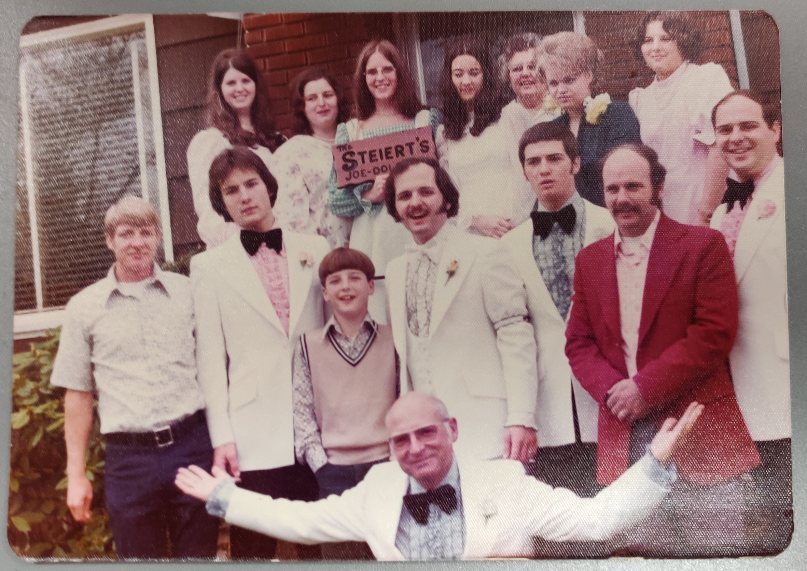
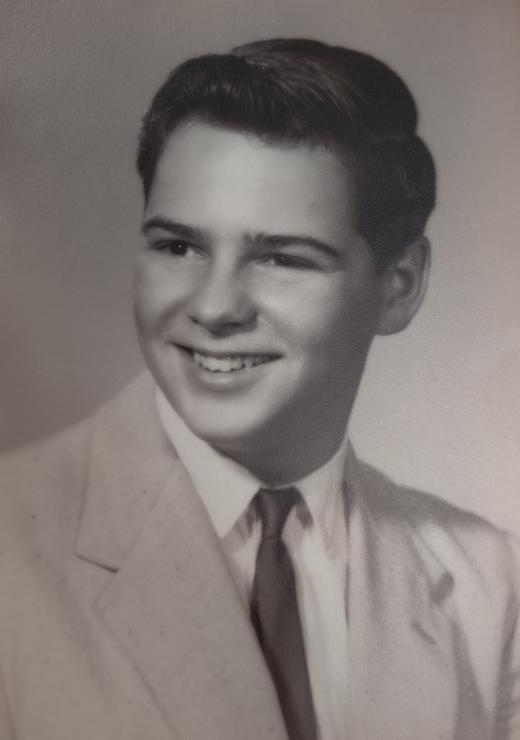
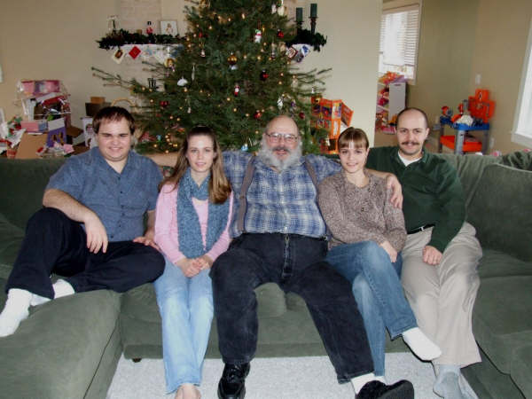
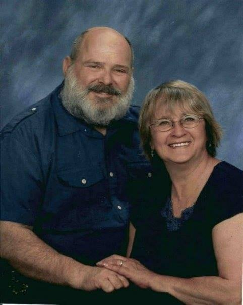

On Monday, March 15th, 2021, Tom Steiert passed from this life into the arms of God. He was 73 years old.
Thomas Anthony Steiert was born to Dolores and Joseph Steiert on November 28th, 1947 in Portland, OR. He was the oldest of nine siblings, all of whom survive Tom: Marge, Mike, Kathy, Patty, Gary, Rick, Lisa, and Ron.
After graduating from Central Catholic High School, Tom served in the Coast Guard during the Vietnam War. After returning home, he began a family and put himself through college at night. He earned his Bachelors of Arts in Management from Marylhurst College. Tom was a loving husband and a proud father. He was a generous man who worked hard to support his family, and retired from Freightliner in 2010. Tom always made time for others. He was known for being a man of his word, that you could count on. Tom was a fourth degree, past Grand Knight, and past Faithful Navigator in the Knights of Columbus, a Boy Scout leader, coached volleyball, and volunteered at Our Lady of Peace retreat house.
Tom loved cooking for his family on the weekends. When his kids were in school, he woke up early every Sunday, went to morning Mass, and spent the rest of the morning making a huge spread for the family to share. He was also a master dutch oven cook, and creative in the flavors he would try in his stews, whether he cooked it over coals or on the stove.
Tom had a great sense of humor. Anyone who knew him knew the sparkle in his eyes that preceded his wit.
Tom leaves behind his wife Sharon, seven children: Greg, Jacquie, Angela, Alex, Stanley, Rhonda and Holly, eleven grandchildren & eleven great-grandchildren.
May he rest in peace.
A funeral service will be held on Friday, March 26th, 2021 at
St. Henry’s Catholic Church
346 NW First Street
Gresham, OR 97030-7220
Rosary at 10:30am
Funeral Mass at 11:00am
The Mass will be streamed live at the St Henry Catholic Church Facebook page